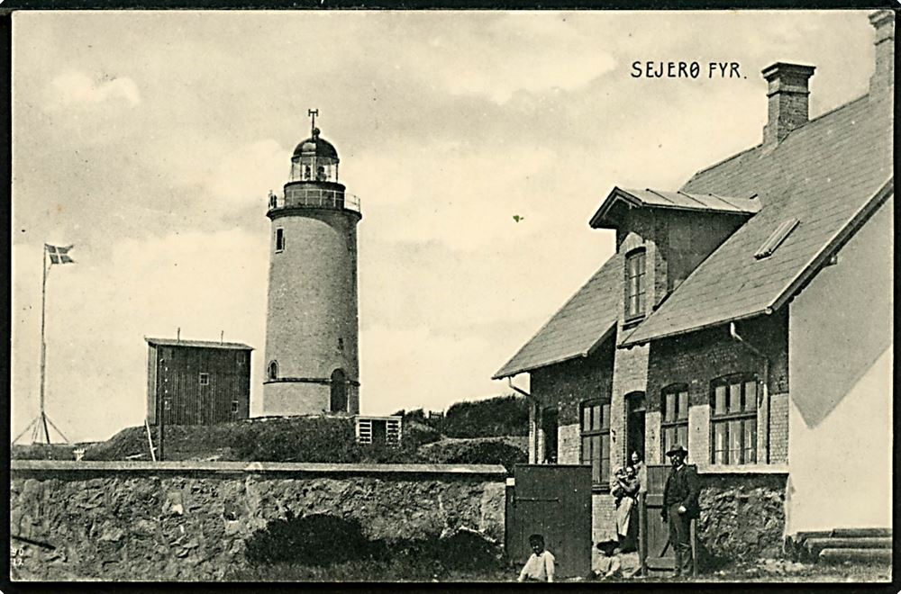

Sejerøs historie går langt tilbage. Øen har været beboet siden oldtiden, og adskillige gravhøje og en
enkelt langdysse er fortsat synlige på de mere end 60 navngivne bakketoppe.
For mange sjællændere har Sejerø en form for mystisk status. Dette skyldes formodentlig øens isolerede
placering relativt langt ude i Sejerøbugten, hvilket har givet Sejerøboerne ry for at være sejlivede
mennesker med stor vilje til at klare sig.

Sejerø nævnes første gang i Kong Valdemars Jordebog fra 1231. I 1310 hørte Sejerø under Roskildebispen,
men kom ved Reformationen i 1536 tilbage under kronen.
Jens Rostgaard (1650-1715) købte øen i 1692, og den indgik i hans stamhus Krogerup i 1741. Sejerøboerne
købte deres ejendom til selveje i 1805. De havde indtil da haf mange særrettigheder, bl.a. hoverifrihed
og eget ting (1622-1805).

Øens særlige naturgeografi med de mange bjerge og den oversvømmede lavning bidrager også til fornemmelsen
af, at Sejerø ikke ligner andre steder på Sjælland. Sejerø har med andre ord masser af egenart og en rig
kulturarv, der appellerer til at besøge øen eller måske endda bosætte sig her.
Sejerøs natur er ikke unik i en dansk contekst, men øens “bjerge” er noget enestående. Øen har mere end
60 navngivne høje, som ligger i to “bjergkæder” på hver side af øens lave og flade midte. Det Sejerøske
ord for bjerg er “bier”.

Traditionelt blev øens midte afgræsset af får og kvæg, og på bakkeskråningerne havde man agerdyrkning.
Sejerøs bebyggelser ligger typisk på bakkernes østvendte sider, for at sikre læ fra vestenvinden.
Landbruget blev indtil 1660 suppleret med en omfattende handelssejlads. Beboerne var i flere århundreder
kendt for deres maritime evner samt stridbare sind over for både fremmede, øens præster og hinanden.
Sejerø har mange kulturhistoriske seværdigheder spredt over hele øen – som eksempel kan nævnes øens
tejstkoloni, det markante fyr, Kirken, Kulturhuset, flere gravhøje og smukke kyststrækninger.
Kongshøj er med sine 30 meter øens højeste punkt. Hele området med Kongshøj, Lindhoved samt Nordre og
Søndre klinter kaldes for “Bieret” – Bjerget.
Kongshøj er derfor en høj, der ligger på Bjerget